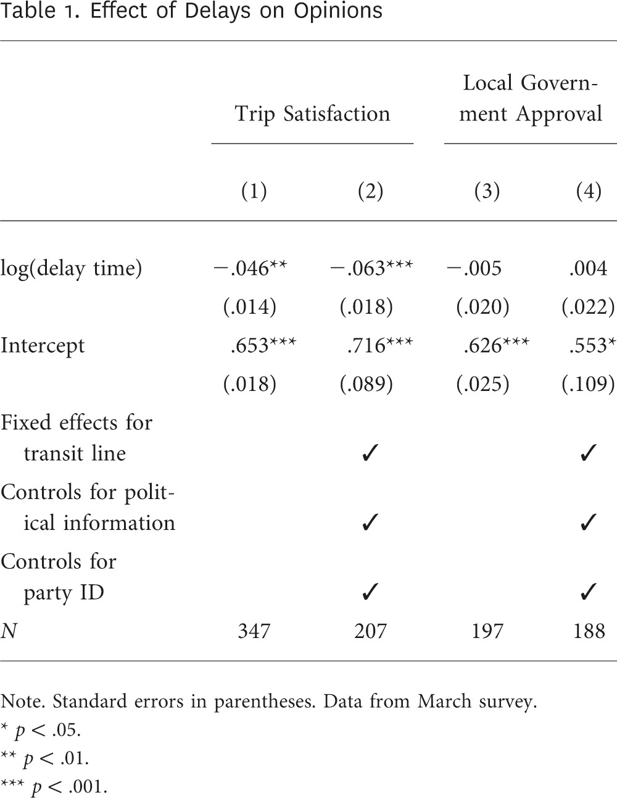
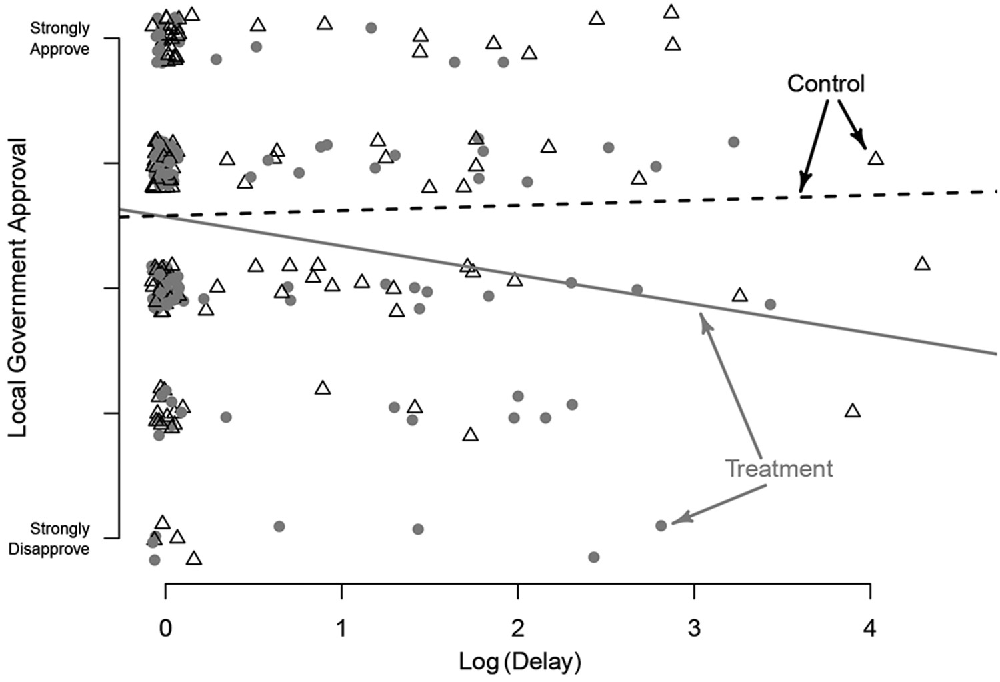

We will revisit the studies you have seen with, implement fixed effects where they are necessary, and practice presenting the results.
Task 1: Having Daughters and Judges’ Voting Behavior
Glynn, Adam N., and Maya Sen. 2015. “Identifying Judicial Empathy: Does Having Daughters Cause Judges to Rule for Women’s Issues?” American Journal of Political Science 59(1): 37–54.
Let’s start with lower level, case-level dataset (you worked with in problem set 9). You need to estimate the same model specification as before, and include child fixed effects. Use feglm(...., family = "logit") to estimate a logit model. Work with the subset of parents with 1-4 kids. The dataset, when loaded form the setup chunk, is already restricted to gender-related cases only. What is the purpose of using child fixed effects (in comparison to our previous approach to just allowing for non-linear effect of child variable)? Give an example of what factors could be accounted for in such a manner.
Hint: you probably have written such a model before with glm() and factor(child).
Including child fixed-effects allows us to remove the unobserved factors that can be related to having different number of kids. In other words, we estimate the effects of having girls among judges with the same number of children. These differences in number of kids can, for instance, reflect the wealth of the judge (to some extent), which could be associated with the voting behavior. Or different number of kids may impact the degree of involvement with female issues as a result of having a daughter, and hence affect the degree to which this involvement translates into feminit voting.
Code
# not recommended approach, as glm() cannot handle vary many dummies well# in this case, it works fine because the number of FE dummies is smallm1 <-glm( progressive_vote ~ any_girls + woman + age + catholic + asian + african + hispanic + republican +factor(child),data =subset(cases, child >0& child <5),family =binomial())summary(m1)
Call:
glm(formula = progressive_vote ~ any_girls + woman + age + catholic +
asian + african + hispanic + republican + factor(child),
family = binomial(), data = subset(cases, child > 0 & child <
5))
Deviance Residuals:
Min 1Q Median 3Q Max
-1.3188 -0.9698 -0.8406 1.2931 1.7913
Coefficients:
Estimate Std. Error z value Pr(>|z|)
(Intercept) -0.94556 0.59412 -1.592 0.11149
any_girls 0.43129 0.15520 2.779 0.00545 **
woman -0.23775 0.18498 -1.285 0.19870
age 0.01667 0.01008 1.653 0.09828 .
catholic -0.24764 0.12862 -1.925 0.05418 .
asian -0.15328 0.70158 -0.218 0.82705
african -0.20143 0.28093 -0.717 0.47337
hispanic -0.73717 0.43047 -1.712 0.08681 .
republican -0.65387 0.13881 -4.711 2.47e-06 ***
factor(child)2 -0.17553 0.21168 -0.829 0.40699
factor(child)3 -0.14291 0.21705 -0.658 0.51028
factor(child)4 -0.28293 0.24215 -1.168 0.24264
---
Signif. codes: 0 '***' 0.001 '**' 0.01 '*' 0.05 '.' 0.1 ' ' 1
(Dispersion parameter for binomial family taken to be 1)
Null deviance: 1996.9 on 1506 degrees of freedom
Residual deviance: 1954.8 on 1495 degrees of freedom
(580 observations deleted due to missingness)
AIC: 1978.8
Number of Fisher Scoring iterations: 4
Code
# using fixest and correct formula syntaxm1 <-feglm( progressive_vote ~ any_girls + woman + age + catholic + asian + african + hispanic + republican | child, # no factor(child)data =subset(cases, child >0& child <5),family ="logit",se ="iid"# no clustered SEs)
NOTE: 580 observations removed because of NA values (LHS: 1, RHS: 579).
Building on the model specification from before, this time take into account the fact that the dataset has a hierarchical structure: there are multiple judges per circuit, and there is temporal variation in the data. Include fixed effects for both of these variable. Explain what is the purpose of each of these fixed effects in the context of the model and data.
Code
m2 <-feglm( progressive_vote ~ any_girls + woman + age + catholic + asian + african + hispanic + republican | child + circuit + year,data =subset(cases, child >0& child <5),family ="logit",cluster =c("casename") # SEs clustered at case level)
NOTE: 580 observations removed because of NA values (LHS: 1, RHS: 579).
Including year fixed effects allows us to remove factors that can explain variation in progressive voting similar to all judges across the time. For instance, certain events from 1996 to 2002, such as nation-wide scandals, could make all judges more aware of female issues thus increasing their probability to vote progressively. Curcuit-level fixed effects allow us to remove the variation across geographic and circuit-specific factors. These could include, for instance, some historical tendencies relevant for that particular area or, say, ideological composition of a circuit in general (rather than ideology of an individual judge), which could impact each judges’ decision-making process indirectly. In general, we avoid omitted variable bias for temporal changes and for circuits-specific factors by including the fixed effects. Additionally, we clustered standard errors by case, the lowest level of hierarchical structure in our data, making them most conservative. This clustering is necessary as the independence of observations may be violated: multiple judges may be working on the same case in the dataset and their decisions may be influenced by the decisions of others.
Now let’s switch to by-judge dataset. Based on the case-level data, create the dataset where progressive_vote is the variable that depicts the share of progressive votes by judge for the gender-related cases only and for plaintiff being a woman, and you also all other variables needed for the specification. You may be needing the following functions:
filter()
group_by()
n(): number of observations in group (if applied after group_by()) or in dataset in total
first(): returns the first value in the group/dataset
summarize(): creates a new data frame and returns one row for each combination of grouping variables
At this step, we moved from case-level to judge-level by aggregating the data. Since we calculated the proportion of progressive votes for each judge across all years, we no longer need that variable in the dataset. As for others, we take the first values in the group (i.e. for each judge) and keep it, as these values stay consant across judge in our dataset. Instead of the first value, we could have taken, for instance, the last one. This approach, however, assumes that every judge only served in one circuit (and we select their first circuit appearing the in the data). Ideally, we would have to check how often judges served in more than one circuit (and there are cases when this happens) and make decisions about which circuit we should keep for the judges that served across multiple circuits. One approach is just to take the circuit with most cases for that judge, and this is what we do in the second option with code. Instead of the original order, we calculaze how many cases each judge ruled in each circuit and arrange the observations in descending order. This way the first value in teh circuit variable is the value where judge ruled most cases.
cases_by_judge <- cases %>%group_by(judge_name, circuit) %>%mutate(n_cases =n(), # how many cases judge had in each circuit ) %>%arrange(judge_name, -n_cases) %>%# by largest number of cases for each judgegroup_by(judge_name) %>%summarize(progressive_vote =sum(progressive_vote) /n(),any_girls =first(any_girls),age =first(age),catholic =first(catholic),asian =first(asian),african =first(african),hispanic =first(hispanic),girls =first(girls),republican =first(republican),age =first(age),woman =first(woman),circuit =first(circuit),child =first(child) )modelsummary::datasummary_skim(cases_by_judge)
Unique (#)
Missing (%)
Mean
SD
Min
Median
Max
progressive_vote
84
0
0.4
0.4
0.0
0.4
1.0
any_girls
3
49
0.7
0.4
0.0
1.0
1.0
age
29
57
50.4
6.2
35.0
50.0
64.0
catholic
3
56
0.3
0.5
0.0
0.0
1.0
asian
3
53
0.0
0.1
0.0
0.0
1.0
african
3
53
0.1
0.2
0.0
0.0
1.0
hispanic
3
53
0.0
0.2
0.0
0.0
1.0
girls
7
49
1.2
1.0
0.0
1.0
5.0
republican
3
44
0.6
0.5
0.0
1.0
1.0
woman
3
44
0.2
0.4
0.0
0.0
1.0
child
13
46
2.6
1.8
0.0
2.0
15.0
On by-judge dataset, estimate an appropriate model that accounts for hierarchical structure in the data. Also only work with a subset of parents with 1-4 kids. Apart from child FEs, do you need both circuit and/or year FEs? Why (not)?
NOTE: 62 observations removed because of NA values (LHS: 1, RHS: 61).
Since now we are modeling the share of votes, we switch to OLS from a logit model to account for the nature of the dependent variable. Hence, the function changes from feglm() to feols(). Alternatively, we could have estimated a linear model with glm by specifying feglm(family = "gaussian").
As we removed temporal variation by aggregating to judge-level across all years, we cannot include year fixed effects. But the circuit fixed effects should be accounted for if possible for the same reasons as above.
Place all your models into a well-formatted table. Comment on the effect of any_girls. Hide the source code (but not the output!) with chunk options.
Adding #| echo: false hides the source code.
Code
```{r}#| label: pretty-table# this ensures that depending on the format we knit the file# we get nice checkmarks for fixed effectsif (knitr::is_latex_output()) {# this object will be used when knittig to PDF rows <-tribble(~term, ~m1, ~m2, ~m3,"Child FE", "$\\checkmark$", "$\\checkmark$", "$\\checkmark$","Year FE", "", "$\\checkmark$", "","Circuit FE", "", "$\\checkmark$", "$\\checkmark$" )} else {# this object will be used when knittig to HTML rows <-tribble(~term, ~m1, ~m2, ~m3,"Child FE", "✓", "✓", "✓","Year FE", "", "✓", "","Circuit FE", "", "✓", "✓" )}modelsummary(list("Logit"= m1,"Logit"= m2,"OLS"= m3 ),title ="The Effect of Having Daughters on Judges' Voting Behavior",coef_map =c("any_girls"="Having At Least One Daughter","women"="Female","age"="Age","catholic"="Catholic","asian"="Asian","african"="African american","hispanic"="Hispanic","republican"="Republican" ),gof_map ="nobs",stars = T,add_rows = rows,notes =list("Notes: Standard errors in parentheses. White is the baseline category for race. All models estimated on subsets of judges with 1-4 children. Model 2 includes standard errors clustered by case."),) %>% kableExtra::add_header_above( # add an extra row withc(" "=1, # nothing in column 1"Feminist\nVote"=2,"Proportion of Feminist Votes"=1 ),bold = F,italic = T ) %>% kableExtra::add_header_above( # add an extra row withc(" "=1, # nothing in column 1"Dependent variable:"=3 ),bold = F,italic = T ) %>% kableExtra::column_spec(2:4, width ="3cm")```
The Effect of Having Daughters on Judges' Voting Behavior
Dependent variable:
Feminist Vote
Proportion of Feminist Votes
Logit
Logit
OLS
Having At Least One Daughter
0.431**
0.401*
0.083
(0.156)
(0.166)
(0.058)
Age
0.017+
0.019+
0.004
(0.010)
(0.011)
(0.004)
Catholic
−0.248+
−0.207
−0.064
(0.129)
(0.142)
(0.049)
Asian
−0.153
−0.655
−0.104
(0.704)
(0.725)
(0.237)
African american
−0.201
−0.192
−0.071
(0.282)
(0.302)
(0.116)
Hispanic
−0.737+
−0.669
−0.137
(0.432)
(0.454)
(0.148)
Republican
−0.654***
−0.708***
−0.125*
(0.139)
(0.150)
(0.049)
Num.Obs.
1507
1507
129
Child FE
✓
✓
✓
Year FE
✓
Circuit FE
✓
✓
+ p < 0.1, * p < 0.05, ** p < 0.01, *** p < 0.001
Notes: Standard errors in parentheses. White is the baseline category for race. All models estimated on subsets of judges with 1-4 children. Model 2 includes standard errors clustered by case.
Task 2: Accountability and Blame Attribution
In this task, we will look at another application with fixed effects:
Justin de Benedictis-Kessner. 2018. “How Attribution Inhibits Accountability: Evidence from Train Delays.” The Journal of Politics 80(4): 1417–22.
Here is the abstract of the study:
Do people hold politicians accountable for the performance of government? I test this question using individual-level experiences with the performance of one major public service: transportation. I compile records of transit performance, tracked via individuals’ fare transactions and train delays, and link these data to opinion surveys. I show that people perceive different levels of performance, but fail to connect performance with judgments of government. I build on this by testing the importance of responsibility attribution on people’s ability to hold government accountable. I find that when people are experimentally provided with information on government responsibilities, they are able to connect their experiences of performance with their opinions of government. These results demonstrate that confusion about government responsibilities can frustrate accountability.
There are two datasets from two different surveys, march and summer. They are already loaded in the setup chunk. In the datasets, these are the variables we will need:
triprating_1: rating of the trip
mayor_app_comb: local government approval
polinfo: political information control
delay_comb_log: delay in train arrival (minutes), log
party: party identification (-1 for Democrat, 1 for Republican)
delay_line: transit line that passengers took
Replicate the models in table below and put them in a table. Try to make the table as nice-looking as possible (e.g., no long list of FE units and so on). Make sure that all the information necessary for understanding the model specification is available in the table.

Code
m1 <-lm(triprating_1 ~ delay_comb_log,data = march)m2 <-lm(triprating_1 ~ delay_comb_log + polinfo +factor(party) +factor(delay_line),data = march)m3 <-lm(mayor_app_comb ~ delay_comb_log,data = march)m4 <-lm(mayor_app_comb ~ delay_comb_log + polinfo +factor(party) +factor(delay_line),data = march)rows <-tribble(~term, ~m1, ~m2, ~m3, ~m4,"Transit Line FE", "", "✓", "", "✓","Controls for Political Information", "", "✓", "", "✓","Controls for Party ID", "", "✓", "", "✓")attr(rows, "position") <-3:5modelsummary(list(m1, m2, m3, m4),title ="Table 1: Effect of Train Delay on Public Opinion",notes =c("+ p < 0.1, * p < 0.05, ** p < 0.01, *** p < 0.001","Note. Standard Errors in Parentheses. Data from March Survey." ),coef_map =c("delay_comb_log"="Delay time, log","(Intercept)"="Intercept" ),gof_map =c("nobs", "adj.r.squared"),add_rows = rows,estimate ="{estimate} ({std.error}){stars}",statistic =NULL,) %>% kableExtra::add_header_above(c(" "=1, "Trip \nSatisfaction"=2,"Local Government Approval"=2 ),bold = F,italic = T ) %>% kableExtra::add_header_above( # add an extra row withc(" "=1, # nothing in column 1"Dependent variable:"=4 ) ) %>% kableExtra::column_spec(2:5, width ="2.5cm")
Table 1: Effect of Train Delay on Public Opinion
Dependent variable:
Trip Satisfaction
Local Government Approval
(1)
(2)
(3)
(4)
Delay time, log
−0.046 (0.014)**
−0.063 (0.018)***
−0.005 (0.020)
0.004 (0.022)
Intercept
0.653 (0.018)***
0.757 (0.092)***
0.626 (0.025)***
0.488 (0.114)***
Transit Line FE
✓
✓
Controls for Political Information
✓
✓
Controls for Party ID
✓
✓
Num.Obs.
347
207
197
188
R2 Adj.
0.028
0.119
−0.005
−0.014
+ p < 0.1, * p < 0.05, ** p < 0.01, *** p < 0.001
Note. Standard Errors in Parentheses. Data from March Survey.
The author does not include trip satisfaction as a control variable into models 3 and 4. Should he be doing that? Why (not)?
As the effect of delay on local government approval is likely mediated via trip satisfaction, we should not be including it into models 3-4 as a covariates.If inclusing it, we will likely be underestimating the effect of logged delay time.
Interpret the effect of (log) delay across the models you’ve estimated.
Model 1: For one unit increase in log delay time, trip satisfaction is expected to decrease by 0.046 points, on average (and by 0.019 to 0.07 points with 95% confidence).
Model 2: Holding political information and party identification constant, for one unit increase in log delay time, trip satisfaction is expected to decrease by 0.063 points, on average (and by 0.026 to 0.099 points with 95% confidence). This effect is within transit lines.
Model 3: Log delay time seems to have no significant impact on local government approval at conventional significance levels of 5% or 10%.
Model 4: Holding all else constant, log delay time seems to have no significant impact on local government approval at conventional significance levels of 5% or 10%.
How does log-transformation change the interpretation of the delay substantively?
We use log transformation to describe the relationship with very rapid growth (decrease), followed by slower growth (decrease). That is, we expect that changes in X while X is smaller are more pronounced and impact Y stronger than same changes in larger values of X. In this case, we would expect that a one minute delay would have a stronger negative impact on trip satisfaction and government approval when the delay time is low in comparison to the situation when delay is longer.
How do transit line fixed effects help in identification of the effect in these models?
Transit line fixed effects allow us to account for unobservable characteristics that may vary between users of different transit modes and routes in the main analyses. For instance, some lines may go through poorer areas, which could be a confounder to the relationship of interest.
In the second summer survey, there was an embedded experiment: there were two treatments to vary the cues about attribution of responsibility for performance. Both treatments presented respondents with several paragraphs of factual information compiled from press releases and news articles about the MBTA. In the treatment group, respondents obtained information about the role that local governments play in funding and controlling the MBTA. In the control group, respondents read similar information, but instead of cues about government responsibility, it described how weather affects transportation systems more generally. This is how the author presents the results:

Usingsummer dataset, estimate the model with mayor_app_comb as outcome and delay_comb_log, treat_2, polinfo, party, and delay_line as independent variables. Make sure to allow for heterogeneous effects!
NOTE: 1,871 observations removed because of NA values (LHS: 1,321, RHS: 1,835, Fixed-effects: 1,272).
Replicate the figure above but include the confidence intervals for the expected values using simulations. Set the scenario to an average case in the data. Describe the plot and comment on the results.
The effect of logged dleay times seems to vary for individuals who received information about governemnt responsibility vs. individuals who were readig about the weather. For the control group, we seem to observe very modest effect of logged delay time, while within treated group, longer delays seem to be associated with some decrease in local government approval. The uncertainty about these estimates is quite large, as most observations experienced small or almost no delays. When we look at the expected values after exponentiation, i.e. transformed them back to human-readable scale, we observe the same trends.
Calculate the first differences between your expected values. Present them graphically, too. Comment on the plot and results. Is there a significant effect of the treatment for all values of the delay variable?
For values of log delay below 1.18 (3.25-minute delay), there is no significant difference in the effect of log delay time on government approval between treated and control groups. For the delays above 3.25 minutes, the expected approval is significantly lower at for individuals in the treated group, basing on the 95% confidence intervals.
Code
evs1 <- sims %>%sim_setx(x =list(delay_comb_log =seq(0, 4.5, length.out =20),treat_2 =1 ) )evs2 <- sims %>%sim_setx(x =list(delay_comb_log =seq(0, 4.5, length.out =20),treat_2 =0 ) )fds <- evs1 - evs2fds %>%summary() %>%as.data.frame() %>%clean_names() %>%mutate(delay_comb_log =rep(seq(0, 4.5, length.out =20))) %>%ggplot(aes(x = delay_comb_log %>%exp(),ymin = x2_5_percent,y = estimate,ymax = x97_5_percent )) +geom_ribbon(alpha =0.5) +geom_line() +geom_hline(yintercept =0, lty ="dashed") +labs(x ="Delay Time (in minutes)",y ="Difference in Local Government Approval",color ="",fill ="",title ="Difference in Local Government Approval\nTreated vs. Control Group",subtitle ="Mean Values with 95% Confidence Intervals" )